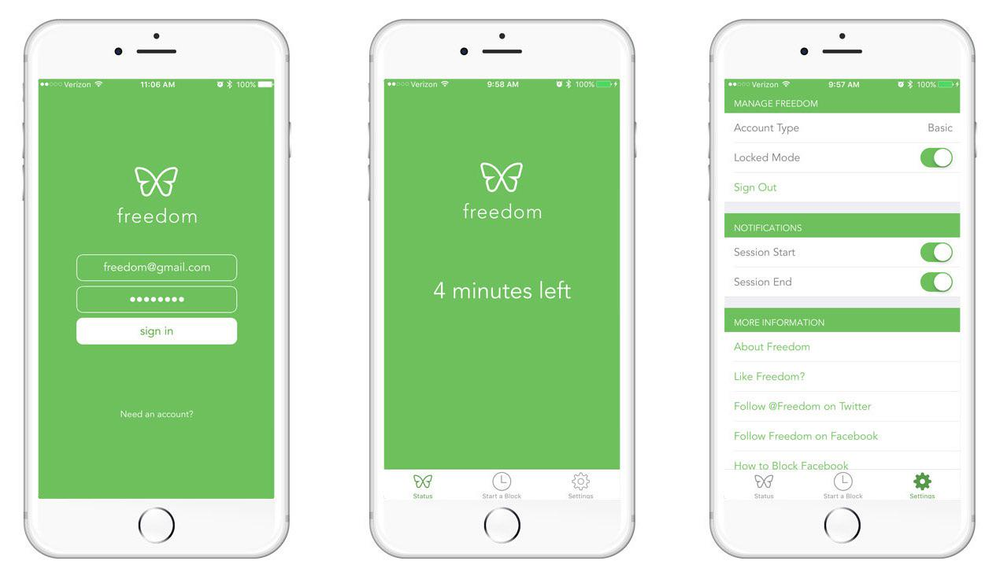

Freedom Is The Best Way to Block Social Media on Your Devices, But......
May 5, 2019
I will soon be doing a deep dive into several popular "distraction blocker" apps. These are tools that make it very difficult to access distractive apps or websites.
Distraction blockers can be an invaluable tool when we are first learning to sever our dependency from our digital addictions.
 Image courtesy of Freedom
However, they come with a huge asterisk that their product pages often omit.
Adding a Button to Block other Buttons
There is something dystopian about our modern society that people pay to add digital buttons to their lives that block them from pressing other digital buttons.
The use of apps like Freedom, StayFocused, or Forest inherently requires some degree of techno-optimism, the belief that new technology will fix all problems that are created by previous technologies. (Spoilers: It won't.)
Blindly believing that these apps will fix our complex issues of social media addiction, online shopping craze and video game compulsion is ludicrous.
Oftentimes when testing these apps, I figured out a loophole in their programming, only to block that loophole, only to "crack" them in another way. Ultimately, I'd find a way to binge Youtube with a laughably roundabout method.
Why? Maybe I'm addicted. But that explanation is too reductionist to be the whole picture.
Our digital addictions are merely symptoms of underlying problems. Some of our necessary needs are not being met, and we're using digital distractions as a bandage.
It could be loneliness, lack of meaning in real life, boredom, stress, physical health, unawareness of our own habits, or any combination of them.
It's no fault of Freedom's developers that their service is not an all-encompassing therapy service that cures our digital addictions.
In fact, after having tested pretty much every distraction blockers out there, I recommend Freedom as the best cross-platform distraction blocker.
I use it daily to block distractive games and websites during my working hours, and it helps me focus by making it too much of a hassle to procrastinate.
It won't, however, solve all my problems.
On a fundamental level, it all boils down to living an intentional life.
Ask "What life do I want to live?"
And start from there. That's what I've been trying my best to do for the past decade, failing most times, but sometimes coming out with valuable insight.
It is the fundamental goal of this blog to explore how to use technology intentionally since otherwise, the technology will use you instead.